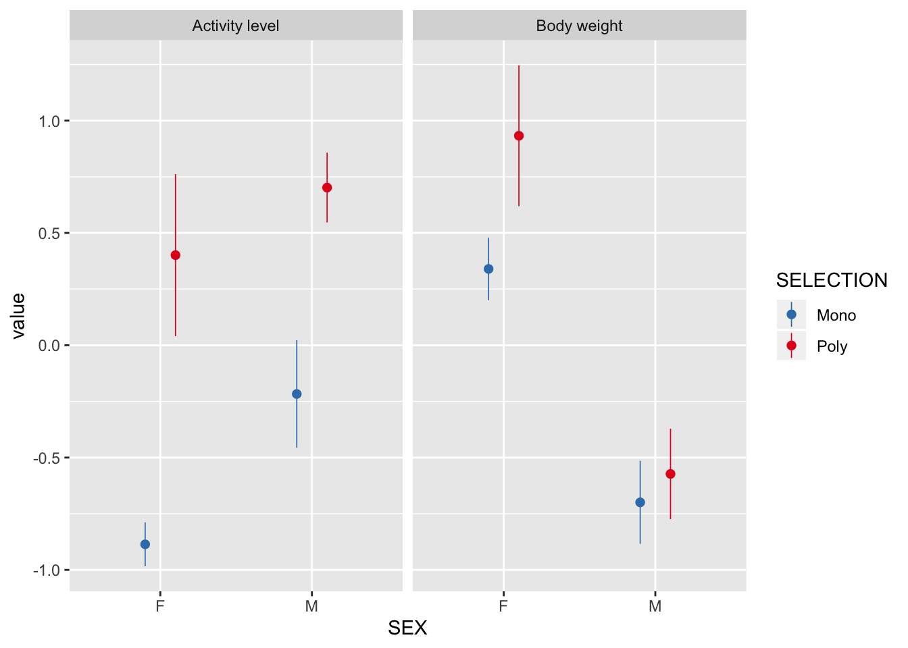
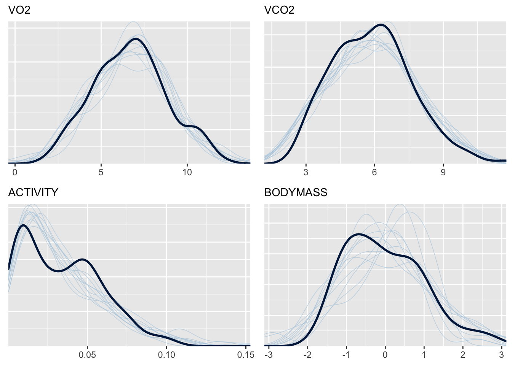
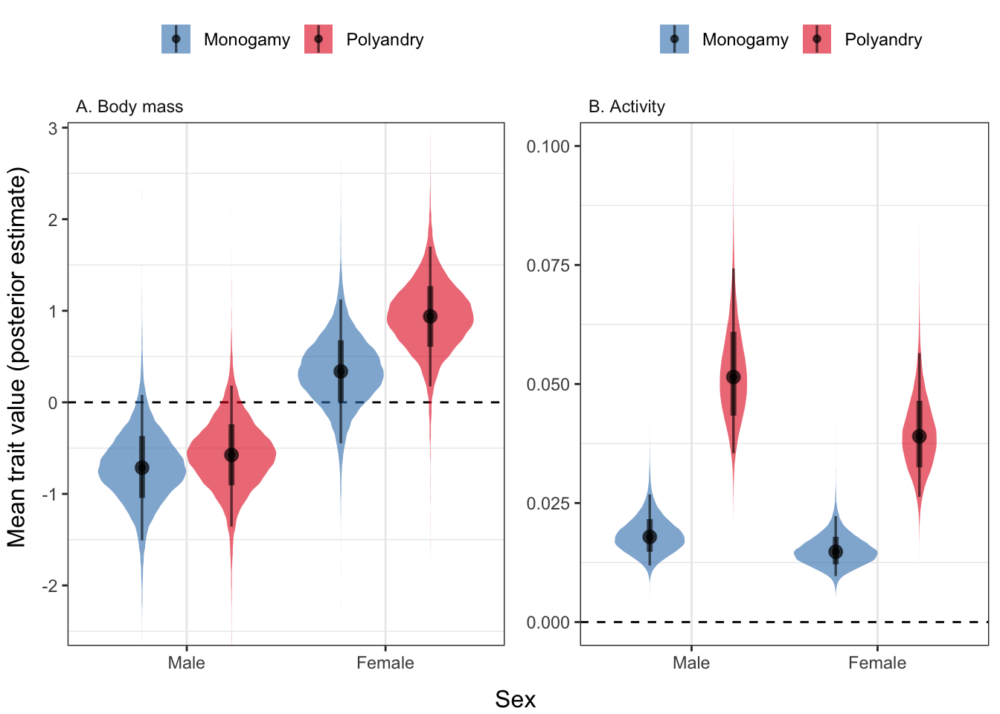
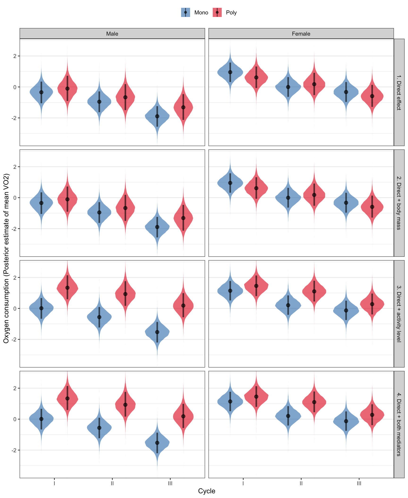
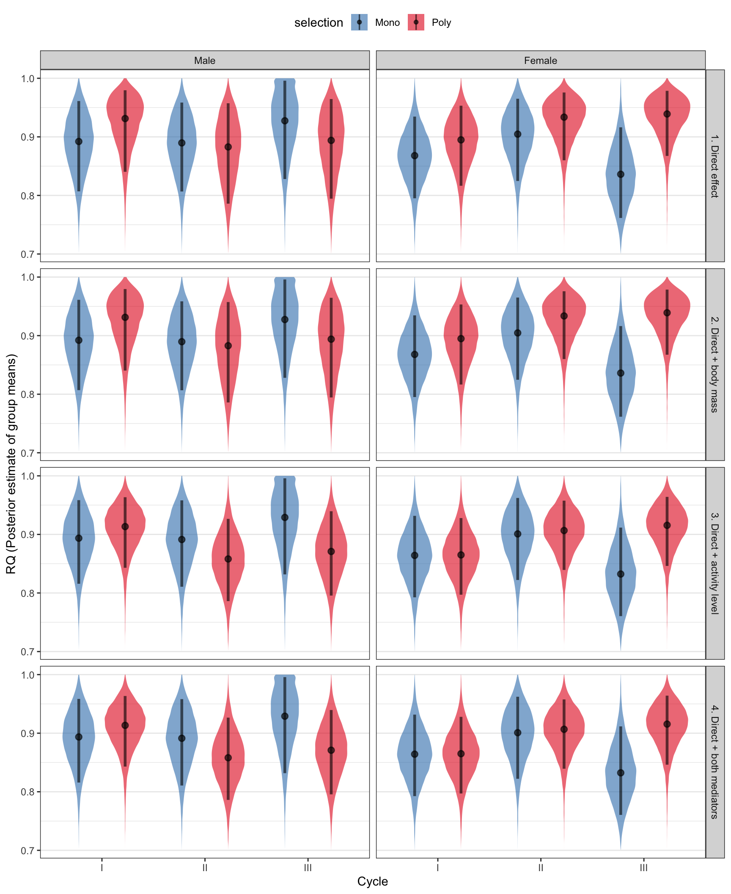

Last updated: 2020-01-17
Checks: 6 1
Knit directory: respiration_exp_evolution/
This reproducible R Markdown analysis was created with workflowr (version 1.4.0). The Checks tab describes the reproducibility checks that were applied when the results were created. The Past versions tab lists the development history.
The R Markdown is untracked by Git. To know which version of the R Markdown file created these results, you’ll want to first commit it to the Git repo. If you’re still working on the analysis, you can ignore this warning. When you’re finished, you can run wflow_publish to commit the R Markdown file and build the HTML.
Great job! The global environment was empty. Objects defined in the global environment can affect the analysis in your R Markdown file in unknown ways. For reproduciblity it’s best to always run the code in an empty environment.
The command set.seed(20190703) was run prior to running the code in the R Markdown file. Setting a seed ensures that any results that rely on randomness, e.g. subsampling or permutations, are reproducible.
Great job! Recording the operating system, R version, and package versions is critical for reproducibility.
Nice! There were no cached chunks for this analysis, so you can be confident that you successfully produced the results during this run.
Great job! Using relative paths to the files within your workflowr project makes it easier to run your code on other machines.
Great! You are using Git for version control. Tracking code development and connecting the code version to the results is critical for reproducibility. The version displayed above was the version of the Git repository at the time these results were generated.
Note that you need to be careful to ensure that all relevant files for the analysis have been committed to Git prior to generating the results (you can use wflow_publish or wflow_git_commit). workflowr only checks the R Markdown file, but you know if there are other scripts or data files that it depends on. Below is the status of the Git repository when the results were generated:
Ignored files:
Ignored: .DS_Store
Ignored: .Rhistory
Ignored: .Rproj.user/
Ignored: data/.DS_Store
Untracked files:
Untracked: analysis/statistics.Rmd
Untracked: code/2.Metabolic_rates.R
Untracked: code/old lavann code.R
Untracked: data/2.metabolic_rates.csv
Untracked: data/paths_VO2.rds
Untracked: data/posterior_predictions.rds
Untracked: docs/figure/
Untracked: output/Figure 2.pdf
Untracked: output/bayesian_R2_values.rds
Untracked: output/bayesian_R2_values_2020.rds
Untracked: output/brms_SEM.rds
Untracked: output/brms_SEM_2020.rds
Unstaged changes:
Modified: .Rprofile
Modified: .gitignore
Modified: README.md
Modified: _workflowr.yml
Modified: analysis/_site.yml
Modified: analysis/about.Rmd
Modified: analysis/index.Rmd
Modified: analysis/license.Rmd
Modified: code/README.md
Modified: data/README.md
Modified: docs/.nojekyll
Modified: output/README.md
Modified: respiration_exp_evolution.Rproj
Note that any generated files, e.g. HTML, png, CSS, etc., are not included in this status report because it is ok for generated content to have uncommitted changes.
There are no past versions. Publish this analysis with wflow_publish() to start tracking its development.
library(tidyverse)
library(gridExtra)
library(brms)
library(RColorBrewer)
library(glue)
library(kableExtra)
library(tidybayes)
library(bayestestR)
options(stringsAsFactors = FALSE)respiration <- read_csv("data/2.metabolic_rates.csv") %>%
rename(SELECTION = `?SELECTION`)There is a strong effect of selection treatment on activity in both sexes, and an effect of selection on female body size.
respiration %>%
filter(CYCLE == "I") %>%
mutate(`Body weight` = scale(BODY_WEIGHT),
`Activity level` = scale(ACTIVITY)) %>%
gather(trait, value, `Body weight`, `Activity level`) %>%
ggplot(aes(SEX, value, colour = SELECTION)) +
stat_summary(position = position_dodge(0.4), size = 0.3) +
facet_wrap(~ trait) +
scale_color_brewer(palette = "Set1", direction = -1)
brmsHere, I scale and centre the body mass (across all samples), and multiply VO2 and VCO2 by 1000 so that their units (and resulting regression coefficients) are close to those assumed by the brms default priors.
I did not scale and centre VO2 and VCO2, because I will soon relate them to each other via the respiratory quotient, RQ, so it makes sense to leave them in their original units. I also did not scale and centre activity level, because this variable is naturally bounded by zero and one, and so I can model it on its original scale using the beta distribution.
scaled_data <- respiration %>%
mutate(VO2 = VO2 * 1000,
VCO2 = VCO2 * 1000,
BODY_WEIGHT = as.numeric(scale(BODY_WEIGHT))) %>%
rename(BODYMASS = BODY_WEIGHT)brms structural equation model (SEM)The following brms code seeks to estimate the coefficients for more than one model formula simultaneously. There is a model for both of the mediator variables (activity and body mass), a model of oxygen production (VO2), and a model of CO2 production (which is related to VO2 via the parameter RQ, the respiratory quotient, which the model also estimates).
The formulae were chosen a priori, to reflect our biological intuition about factors that might affect each response variable.
Formula: ACTIVITY ~ SELECTION * SEX + CYCLE + (1 | LINE) + (1 | SAMPLE)
This formula allows for effects on activity of sex and selection treatment (and their 2-way interaction), and for an effect of cycle (coded as a 3-level factor, allowing non-linear change across the 3 cycles). The random factors were added due to our repeated measures of replicate selection lines and samples (same for the following forrmulae).
Formula: BODYMASS ~ SELECTION * SEX + (1 | LINE)
This formula allows for effects on activity of sex and selection treatment (and their 2-way interaction). Because there is only one measure of body mass for each sample of flies, we do not need to fit a sample-level random effect; also, this model is run on only a subset of the full dataset (one of the 3 cycles), since we would incur pseudo-replication if we used the full dataset.
Formula: VO2 ~ SELECTION * SEX * CYCLE + BODYMASS + ACTIVITY +
SELECTION:BODYMASS + SELECTION:ACTIVITY + SEX:BODYMASS + SEX:ACTIVITY + (1 | LINE) + (1 | SAMPLE)
This formula allows for effects on activity of sex, selection an cycle (and their 2- and 3-way interactions), and for sex- and selection treatment-specific effects of body mass and activity level.
Formulae (2-part model, see vignette("brms_nonlinear")):
VCO2 ~ VO2 * (0.7 + 0.3 * inv_logit(RQ))
RQ ~ SELECTION * SEX * CYCLE + BODYMASS + ACTIVITY +
SELECTION:BODYMASS + SELECTION:ACTIVITY + SEX:BODYMASS + SEX:ACTIVITY + (1 | LINE) + (1 | SAMPLE)
VCO2 is assumed to depend on the value of VO2 from the same measurement, multiplied by RQ, a parameter that is constrained to vary between 0.7 and 1 (based on our prior knowledge of the chemistry of respiration) through the use of the inverse logit function. In turn, RQ is assumed to depend on the same set of predictors as for VO2.
To apply some mild regularisation and assist model convergence, we set a prior on all the fixed effect parameters of normal(0, 10).
All response variables are assumed to follow a normal (Gaussian) distribution, except for activity level (beta); as we shall see, this turns out to be a reasonable approximation of the response variables’ true distributions.
brms modelinv_logit <- function(x) 1 / (1 + exp(-x))
# add a subsetting variable, so that we can estimate the effects of selection and sex on body size without having three redundant measures of body size (one per cycle). See ?brmsformula, section beginning "For multivariate models, subset may be used..."
scaled_data <- scaled_data %>%
mutate(body_subset = CYCLE == "I")
if(!file.exists("output/brms_SEM.rds")){
brms_formula <-
bf(VO2 ~ SELECTION * SEX * CYCLE +
BODYMASS + ACTIVITY +
SELECTION:BODYMASS + SELECTION:ACTIVITY +
SEX:BODYMASS + SEX:ACTIVITY +
(1 | LINE) + (1 | SAMPLE)) +
bf(VCO2 ~ VO2 * (0.7 + 0.3 * inv_logit(RQ)),
RQ ~ SELECTION * SEX * CYCLE +
BODYMASS + ACTIVITY +
SELECTION:BODYMASS + SELECTION:ACTIVITY +
SEX:BODYMASS + SEX:ACTIVITY +
(1 | LINE) + (1 | SAMPLE),
nl = TRUE) +
bf(BODYMASS | subset(body_subset) ~ SELECTION * SEX +
(1 | LINE)) +
bf(ACTIVITY ~ SELECTION * SEX + CYCLE +
(1 | LINE) + (1 | SAMPLE), family = "beta") +
set_rescor(FALSE)
brms_SEM <- brm(
brms_formula,
data = scaled_data,
iter = 10000, chains = 4, cores = 4,
prior = prior(normal(0, 10), class = "b"),
control = list(max_treedepth = 20, adapt_delta = 0.99)
)
saveRDS(brms_SEM, file = "output/brms_SEM.rds")
bayesian_R2_values <- bayes_R2(brms_SEM)
saveRDS(bayesian_R2_values,
file = "output/bayesian_R2_values.rds")
} else {
brms_SEM <- readRDS("output/brms_SEM.rds")
bayesian_R2_values <-
readRDS("output/bayesian_R2_values.rds")
}Here is the complete output of summary() called on the model. Note that the model has converged ok (Rhat = 1), and that no parameters are under-sampled (shown by the ESS columns). Several parameters also differ significantly from zero (shown by their 95% credible intervals not overlapping zero). Note that the response variables are not all in the same units, so the magnitudes of their coefficients (“Estimate” column) are not directly comparable.
pvalues <- as.data.frame(p_direction(brms_SEM)) %>%
mutate(Parameter = str_remove_all(Parameter, "b_"),
Parameter = str_replace_all(Parameter, "[.]", ":"),
p = (100 - pd) / 100) %>%
filter(!grepl("[.]1", Parameter))
fixef(brms_SEM) %>%
as.data.frame() %>%
rownames_to_column("Parameter") %>%
left_join(pvalues %>% select(-pd), by = "Parameter") %>%
mutate(` ` = ifelse(p < 0.05, "\\*", ""),
` ` = replace(` `, p > 0.05 & p < 0.1, "~"),
` ` = replace(` `, p < 0.01, "**"),
` ` = replace(` `, p < 0.001, "***")) %>%
mutate(Response = map_chr(strsplit(Parameter, split = "_"), ~ .x[1]),
Response = str_replace_all(Response, "BODYMASS", "Body mass"),
Response = str_replace_all(Response, "ACTIVITY", "Activity"),
Response = str_replace_all(Response, "VCO2", "RQ"),
Parameter = str_replace_all(Parameter, "BODYMASS", "Body mass"),
Parameter = str_replace_all(Parameter, "ACTIVITY", "Activity"),
Parameter = str_remove_all(Parameter, ".+_"),
Parameter = str_replace_all(Parameter, "SELECTIONPoly", "Polyandry"),
Parameter = str_replace_all(Parameter, "CYCLEIII", "Cycle III"),
Parameter = str_replace_all(Parameter, "CYCLEII", "Cycle II"),
Parameter = str_replace_all(Parameter, "SEXM", "Male"),
Parameter = str_replace_all(Parameter, ":", " x ")) %>%
select(Response, Parameter, everything()) %>%
mutate(Response = factor(Response,
c("Activity", "Body mass", "VO2", "RQ"))) %>%
arrange(Response) %>% select(-Response) %>%
kable(digits = 3) %>% kable_styling() %>%
group_rows("Activity level", 1, 6) %>%
group_rows("Body mass", 7, 10) %>%
group_rows("VO2", 11, 28) %>%
group_rows("Respiratory quotient (RQ)", 29, 46)| Parameter | Estimate | Est.Error | Q2.5 | Q97.5 | p | |
|---|---|---|---|---|---|---|
| Activity level | ||||||
| Intercept | -4.247 | 0.210 | -4.664 | -3.840 | 0.000 | *** |
| Polyandry | 0.996 | 0.278 | 0.450 | 1.548 | 0.001 | ** |
| Male | 0.197 | 0.242 | -0.278 | 0.679 | 0.209 | |
| Cycle II | 0.100 | 0.090 | -0.078 | 0.276 | 0.131 | |
| Cycle III | 0.034 | 0.092 | -0.147 | 0.215 | 0.357 | |
| Polyandry x Male | 0.096 | 0.329 | -0.544 | 0.757 | 0.385 | |
| Body mass | ||||||
| Intercept | 0.340 | 0.394 | -0.447 | 1.124 | 0.165 | |
| Polyandry | 0.597 | 0.556 | -0.494 | 1.693 | 0.118 | |
| Male | -1.049 | 0.274 | -1.584 | -0.508 | 0.000 | *** |
| Polyandry x Male | -0.466 | 0.385 | -1.228 | 0.296 | 0.111 | |
| VO2 | ||||||
| Intercept | 7.458 | 0.629 | 6.242 | 8.718 | 0.000 | *** |
| Polyandry | -0.568 | 0.965 | -2.467 | 1.249 | 0.269 | |
| Male | -1.616 | 0.834 | -3.248 | 0.021 | 0.027 | * |
| Cycle II | -1.465 | 0.425 | -2.297 | -0.622 | 0.000 | *** |
| Cycle III | -1.960 | 0.426 | -2.806 | -1.131 | 0.000 | *** |
| Body mass | 0.142 | 0.645 | -1.124 | 1.406 | 0.410 | |
| Activity | 20.418 | 6.896 | 7.005 | 33.789 | 0.002 | ** |
| Polyandry x Male | 0.866 | 1.178 | -1.453 | 3.188 | 0.231 | |
| Polyandry x Cycle II | 0.803 | 0.596 | -0.380 | 1.956 | 0.087 | ~ |
| Polyandry x Cycle III | 0.115 | 0.596 | -1.045 | 1.293 | 0.427 | |
| Male x Cycle II | 0.534 | 0.607 | -0.647 | 1.720 | 0.190 | |
| Male x Cycle III | -0.412 | 0.613 | -1.611 | 0.788 | 0.249 | |
| Polyandry x Body mass | -0.031 | 0.699 | -1.388 | 1.373 | 0.475 | |
| Polyandry x Activity | 13.370 | 7.563 | -1.354 | 28.119 | 0.038 | * |
| Male x Body mass | 0.325 | 0.532 | -0.731 | 1.364 | 0.265 | |
| Male x Activity | 10.700 | 7.973 | -4.900 | 26.215 | 0.089 | ~ |
| Polyandry x Male x Cycle II | -0.728 | 0.856 | -2.404 | 0.982 | 0.195 | |
| Polyandry x Male x Cycle III | 0.412 | 0.852 | -1.256 | 2.104 | 0.315 | |
| Respiratory quotient (RQ) | ||||||
| Intercept | 0.126 | 0.679 | -1.197 | 1.492 | 0.418 | |
| Polyandry | 0.295 | 0.983 | -1.704 | 2.207 | 0.361 | |
| Male | 0.258 | 0.866 | -1.401 | 2.046 | 0.389 | |
| Cycle II | 0.549 | 0.561 | -0.500 | 1.715 | 0.160 | |
| Cycle III | -0.438 | 0.531 | -1.533 | 0.595 | 0.199 | |
| Body mass | 0.361 | 0.601 | -0.809 | 1.569 | 0.268 | |
| Activity | -3.490 | 7.159 | -17.599 | 10.285 | 0.316 | |
| Polyandry x Male | 0.275 | 1.094 | -1.930 | 2.411 | 0.393 | |
| Polyandry x Cycle II | 0.100 | 0.696 | -1.299 | 1.458 | 0.437 | |
| Polyandry x Cycle III | 1.202 | 0.711 | -0.157 | 2.667 | 0.043 | * |
| Male x Cycle II | -0.585 | 0.910 | -2.392 | 1.142 | 0.251 | |
| Male x Cycle III | 1.374 | 2.048 | -0.953 | 7.187 | 0.158 | |
| Polyandry x Body mass | -0.148 | 0.623 | -1.384 | 1.072 | 0.400 | |
| Polyandry x Activity | -7.417 | 7.855 | -22.718 | 8.108 | 0.172 | |
| Male x Body mass | -0.688 | 0.473 | -1.629 | 0.222 | 0.070 | ~ |
| Male x Activity | 4.833 | 8.633 | -12.096 | 21.577 | 0.286 | |
| Polyandry x Male x Cycle II | -0.844 | 1.107 | -2.991 | 1.321 | 0.217 | |
| Polyandry x Male x Cycle III | -2.756 | 2.176 | -8.736 | -0.002 | 0.025 | * |
These are all pretty high, which doesn’t tell us much, but it’s included here for completeness.
bayesian_R2_values %>%
as.data.frame() %>%
rownames_to_column("Response variable") %>%
mutate(`Response variable` = gsub("R2", "", `Response variable`)) %>%
kable(digits=2) %>% kable_styling()| Response variable | Estimate | Est.Error | Q2.5 | Q97.5 |
|---|---|---|---|---|
| VO2 | 0.77 | 0.03 | 0.71 | 0.82 |
| VCO2 | 0.92 | 0.01 | 0.91 | 0.94 |
| BODYMASS | 0.61 | 0.07 | 0.45 | 0.71 |
| ACTIVITY | 0.74 | 0.03 | 0.66 | 0.79 |
Here, we draw 10 samples from the posterior of the model, and apply them to the original predictor variables, to check that the predicted values resemble the real data (they should, if the model is a sensible approximation of the real processes that generated the data). The plot looks good, mostly, though the fit is a little off for ACTIVITY because this variable is bounded at zero (prior to being scaled). Rather than adding a more complex model, we elected to settle for the Gaussian approximation.
my_check <- function(r) {
pp_check(brms_SEM, resp = r) +
theme(legend.position = "none") +
labs(subtitle = r)
}
grid.arrange(
my_check("VO2"),
my_check("VCO2"),
my_check("ACTIVITY"),
my_check("BODYMASS")
)
These are used for plotting the range of means that is supported by the data, given our priors. The posterior estimates show the mean of each group, accounting for all the random effects (i.e. the design of the experiment), the covariance structure of the response variables, etc.
We will also use these posteriors for hypothesis testing, e.g. to see if the mean body size of the polyandry flies differs from that of monogamy flies, by subtracting one posterior from the other to get the posterior estimate of the difference in means. If most (e.g. >95%) of this posterior difference lies on one side of zero, the two means may be considered ‘significantly different’ as conventionally defined. The magnitude of the difference in means is also an intuitive measure of effect size, and the posterior gives a sense of how precisely we have estimated effect size.
new <- scaled_data %>%
select(SELECTION, SEX, CYCLE) %>%
distinct() %>%
mutate(body_subset = TRUE)
# Get the posterior estimate of body weight and activity,
# for the 4 combinations of sex and monogamy/polandry treatment
bodymass <- brms_SEM %>%
fitted(new, re_formula = NA,
resp = "BODYMASS", summary = FALSE)
activity <- brms_SEM %>%
fitted(new, re_formula = NA,
resp = "ACTIVITY", summary = FALSE)
if(!file.exists("data/posterior_predictions.rds")){
# Calculate the posterior VO2 and RQ for the levels of 'new', either by assuming bodysize and acitivity are at their global means, or by using the means we have estimated for each combination of selection, sex, and cycle
get_post_response <- function(body, act){
n_combos <- nrow(new)
if(!body) bodyweight <- matrix(0, ncol = n_combos, nrow = 1)
if(!act) activity <- matrix(0, ncol = n_combos, nrow = 1)
get_diagonal <- function(mat){
if(ncol(mat) == nrow(mat)) return(diag(mat))
mat
}
VO2_posterior <- map(
1:n_combos,
~ brms_SEM %>%
fitted(data.frame(
SELECTION = new$SELECTION[.x],
SEX = new$SEX[.x],
CYCLE = new$CYCLE[.x],
BODYMASS = bodymass[, .x],
ACTIVITY = activity[, .x]),
re_formula = NA, resp = "VO2",
summary = FALSE) %>%
get_diagonal()) %>%
do.call("cbind", .)
RQ_posterior <- map(
1:n_combos,
~ brms_SEM %>%
fitted(data.frame(
SELECTION = new$SELECTION[.x],
SEX = new$SEX[.x],
BODYMASS = bodymass[, .x],
ACTIVITY = activity[, .x],
CYCLE = new$CYCLE[.x],
VO2 = VO2_posterior[, .x]),
re_formula = NA, resp = "VCO2",
nlpar = "RQ", summary = FALSE) %>%
get_diagonal()) %>%
do.call("cbind", .)
n_draws <- nrow(VO2_posterior)
posterior <- tibble(
value = c(VO2_posterior),
resp = "VO2",
selection = rep(new$SELECTION, each = n_draws),
sex = rep(new$SEX, each = n_draws),
cycle = rep(new$CYCLE, each = n_draws)
) %>% bind_rows(
tibble(
value = c(RQ_posterior),
resp = "RQ",
selection = rep(new$SELECTION, each = n_draws),
sex = rep(new$SEX, each = n_draws),
cycle = rep(new$CYCLE, each = n_draws)
)
) %>% mutate(
value = ifelse(resp == "RQ",
0.7 + 0.3 * inv_logit(value),
value))
}
posterior_predictions <- list(
direct_path = get_post_response(body = F, act = F),
direct_path_plus_bodyweight = get_post_response(body = T, act = F),
direct_path_plus_activity = get_post_response(body = F, act = T),
all_paths = get_post_response(body = T, act = T))
posterior_predictions <- lapply(
names(posterior_predictions), function(i) {
posterior_predictions[[i]] %>% mutate(path = i)
}) %>% bind_rows() %>%
mutate(path = factor(path, unique(path)))
posterior_predictions <- posterior_predictions %>%
mutate(sex = ifelse(sex == "M", "Male", "Female"),
sex = factor(sex, c("Male", "Female")),
path = replace(as.character(path),
path == "direct_path",
"1. Direct effect"),
path = replace(path,
path == "direct_path_plus_bodyweight",
"2. Direct + body mass"),
path = replace(path,
path == "direct_path_plus_activity",
"3. Direct + activity level"),
path = replace(path,
path == "all_paths",
"4. Direct + both mediators"))
posterior_predictions %>%
saveRDS("data/posterior_predictions.rds")
} else {
posterior_predictions <-
readRDS("data/posterior_predictions.rds")
}Here, we see that flies from the polyandry and monogamy selection treatments differ strongly in activity levels, and (for females) in body mass. Thus, in subsequent analyses, we attempt to partition out the effect of selection on respiration that is due to the difference in body size, activity, or other unmeasured mediator variables (e.g. physiological differences).
parse_mediators <- function(x){
var <- x
x <- get(x)
colnames(x) <- apply(new, 1, paste0, collapse="~")
gather(as_tibble(x)) %>%
mutate(draw = rep(1:(n()/4), 4),
split = strsplit(key, split = "~"),
selection = map_chr(split, ~.x[1]),
sex = map_chr(split, ~.x[2])) %>%
select(draw, sex, selection, value) %>%
mutate(mediator = var)
}
mediators <- parse_mediators("bodymass") %>%
bind_rows(parse_mediators("activity")) %>%
mutate(mediator = factor(mediator, unique(mediator))) %>%
mutate(
mediator = replace(as.character(mediator),
mediator == "bodymass",
"A. Body mass"),
mediator = gsub("activity",
"B. Activity",
mediator),
Sex = relevel(factor(ifelse(sex == "F",
"Female",
"Male")), ref = "Male"),
selection = ifelse(selection == "Mono",
"Monogamy",
"Polyandry"))
pd <- position_dodge(0.9)
mediator_plot <- function(dat){
dat %>%
ggplot(aes(Sex, value, fill = selection)) +
scale_fill_brewer(palette = "Set1", direction = -1, name = "") +
geom_hline(yintercept = 0, linetype = 2) +
stat_eye (alpha = 0.6, position = pd) +
facet_wrap(~ mediator) +
#coord_cartesian(ylim = c(-2, 2)) +
theme_bw() +
theme(legend.position = "top",
strip.background = element_blank(),
strip.text = element_text(hjust = 0),
panel.grid.major.y = element_blank()) +
ylab(NULL) + xlab(NULL)
}
grid.arrange(
mediators %>%
filter(mediator == "A. Body mass") %>%
mediator_plot() + coord_cartesian(ylim = c(-2.4, 2.8)),
mediators %>%
filter(mediator == "B. Activity") %>%
mediator_plot() + coord_cartesian(ylim = c(0, 0.1)),
ncol = 2, left = "Mean trait value (posterior estimate)", bottom = "Sex")
Figure 2: Polyandry females were larger than monogamy females, and polyandry flies of both sexes were more active than monogamy flies. The y-axis shows the posterior estimate of the mean trait value (scaled to have mean zero, SD = 1). The coloured areas show the posterior distribution, the black circles show the median, the thick bars show the 95% credible intervals on the median, and the thin bars show the 95% quantiles of the posterior.
The plot show the model’s best estimates of the mean, with the shading showing the posterior distribution of these guesses. The four rows show the effect of: - selection on VO2, independently of both mediator variables - selection on VO2, independently of activity level but incorporating the mediating effect of body mass - selection on VO2, independently of body weight but incorporating the mediating effect of activity level - selection on VO2, including the effects of both mediator variables
posterior_predictions %>%
filter(resp == "VO2") %>%
ggplot(aes(x = cycle, y = scale(value), fill = selection)) +
scale_fill_brewer(palette = "Set1", direction = -1, name = NULL) +
geom_eye (alpha=0.6, .width = c(0.88), position = pd) +
coord_cartesian(ylim = c(-3.5, 2.8)) +
facet_grid(path~sex) +
theme_bw() +
theme(legend.position = "top",
panel.grid.major.x = element_blank()) +
xlab("Cycle") +
ylab("Oxygen consumption (Posterior estimate of mean VO2)") 
posterior_predictions %>%
filter(resp == "RQ") %>%
ggplot(aes(x = cycle, y = value, fill = selection)) +
scale_fill_brewer(palette = "Set1", direction = -1) +
geom_eye (alpha=0.6, .width = c(0.88), position = pd) +
facet_grid(path~sex) +
theme_bw() +
theme(legend.position = "top",
panel.grid.major.x = element_blank()) +
xlab("Cycle") +
ylab("RQ (Posterior estimate of group means)")
These tables show the mean values of VO2 and RQ in each treatment/cycle/sex combination.
tableS1_S2 <- posterior_predictions %>%
group_by(resp, path, cycle, sex, selection) %>%
summarise(x = list(posterior_summary(value))) %>%
mutate(Estimate = map_dbl(x, ~ .x[1]),
Error = map_dbl(x, ~ .x[2]),
Lower95CI = map_dbl(x, ~ .x[3]),
Upper95CI = map_dbl(x, ~ .x[4])) %>%
select(-x) %>% ungroup()
tableS1 <- tableS1_S2 %>%
filter(resp == "VO2") %>%
rename(`Mean VO2` = Estimate) %>%
select(-resp)
tableS2 <- tableS1_S2 %>%
filter(resp == "RQ") %>%
rename(`Mean RQ` = Estimate) %>%
select(-resp)tableS1 %>% kable(digits=3) %>% kable_styling()| path | cycle | sex | selection | Mean VO2 | Error | Lower95CI | Upper95CI |
|---|---|---|---|---|---|---|---|
|
I | Male | Mono | 5.513 | 0.708 | 4.106 | 6.887 |
|
I | Male | Poly | 5.888 | 0.821 | 4.304 | 7.530 |
|
I | Female | Mono | 7.507 | 0.644 | 6.236 | 8.762 |
|
I | Female | Poly | 6.995 | 0.709 | 5.642 | 8.419 |
|
II | Male | Mono | 4.583 | 0.685 | 3.215 | 5.914 |
|
II | Male | Poly | 5.034 | 0.845 | 3.397 | 6.750 |
|
II | Female | Mono | 6.043 | 0.652 | 4.766 | 7.326 |
|
II | Female | Poly | 6.333 | 0.730 | 4.957 | 7.800 |
|
III | Male | Mono | 3.141 | 0.676 | 1.789 | 4.447 |
|
III | Male | Poly | 4.044 | 0.839 | 2.432 | 5.726 |
|
III | Female | Mono | 5.547 | 0.652 | 4.266 | 6.826 |
|
III | Female | Poly | 5.150 | 0.723 | 3.772 | 6.589 |
|
I | Male | Mono | 5.513 | 0.708 | 4.106 | 6.887 |
|
I | Male | Poly | 5.888 | 0.821 | 4.304 | 7.530 |
|
I | Female | Mono | 7.507 | 0.644 | 6.236 | 8.762 |
|
I | Female | Poly | 6.995 | 0.709 | 5.642 | 8.419 |
|
II | Male | Mono | 4.583 | 0.685 | 3.215 | 5.914 |
|
II | Male | Poly | 5.034 | 0.845 | 3.397 | 6.750 |
|
II | Female | Mono | 6.043 | 0.652 | 4.766 | 7.326 |
|
II | Female | Poly | 6.333 | 0.730 | 4.957 | 7.800 |
|
III | Male | Mono | 3.141 | 0.676 | 1.789 | 4.447 |
|
III | Male | Poly | 4.044 | 0.839 | 2.432 | 5.726 |
|
III | Female | Mono | 5.547 | 0.652 | 4.266 | 6.826 |
|
III | Female | Poly | 5.150 | 0.723 | 3.772 | 6.589 |
|
I | Male | Mono | 6.057 | 0.679 | 4.704 | 7.385 |
|
I | Male | Poly | 8.118 | 0.792 | 6.613 | 9.729 |
|
I | Female | Mono | 7.801 | 0.643 | 6.532 | 9.056 |
|
I | Female | Poly | 8.277 | 0.685 | 6.977 | 9.633 |
|
II | Male | Mono | 5.183 | 0.677 | 3.839 | 6.517 |
|
II | Male | Poly | 7.484 | 0.812 | 5.961 | 9.160 |
|
II | Female | Mono | 6.367 | 0.645 | 5.102 | 7.632 |
|
II | Female | Poly | 7.745 | 0.691 | 6.436 | 9.105 |
|
III | Male | Mono | 3.703 | 0.673 | 2.355 | 5.012 |
|
III | Male | Poly | 6.344 | 0.799 | 4.807 | 7.951 |
|
III | Female | Mono | 5.851 | 0.642 | 4.592 | 7.120 |
|
III | Female | Poly | 6.474 | 0.687 | 5.175 | 7.826 |
|
I | Male | Mono | 6.057 | 0.679 | 4.704 | 7.385 |
|
I | Male | Poly | 8.118 | 0.792 | 6.613 | 9.729 |
|
I | Female | Mono | 7.801 | 0.643 | 6.532 | 9.056 |
|
I | Female | Poly | 8.277 | 0.685 | 6.977 | 9.633 |
|
II | Male | Mono | 5.183 | 0.677 | 3.839 | 6.517 |
|
II | Male | Poly | 7.484 | 0.812 | 5.961 | 9.160 |
|
II | Female | Mono | 6.367 | 0.645 | 5.102 | 7.632 |
|
II | Female | Poly | 7.745 | 0.691 | 6.436 | 9.105 |
|
III | Male | Mono | 3.703 | 0.673 | 2.355 | 5.012 |
|
III | Male | Poly | 6.344 | 0.799 | 4.807 | 7.951 |
|
III | Female | Mono | 5.851 | 0.642 | 4.592 | 7.120 |
|
III | Female | Poly | 6.474 | 0.687 | 5.175 | 7.826 |
tableS2 %>% kable(digits=3) %>% kable_styling()| path | cycle | sex | selection | Mean RQ | Error | Lower95CI | Upper95CI |
|---|---|---|---|---|---|---|---|
|
I | Male | Mono | 0.889 | 0.049 | 0.785 | 0.974 |
|
I | Male | Poly | 0.922 | 0.046 | 0.812 | 0.987 |
|
I | Female | Mono | 0.867 | 0.045 | 0.772 | 0.951 |
|
I | Female | Poly | 0.891 | 0.044 | 0.792 | 0.966 |
|
II | Male | Mono | 0.887 | 0.049 | 0.782 | 0.971 |
|
II | Male | Poly | 0.878 | 0.055 | 0.764 | 0.970 |
|
II | Female | Mono | 0.901 | 0.045 | 0.800 | 0.977 |
|
II | Female | Poly | 0.927 | 0.039 | 0.834 | 0.983 |
|
III | Male | Mono | 0.921 | 0.053 | 0.800 | 1.000 |
|
III | Male | Poly | 0.888 | 0.055 | 0.770 | 0.976 |
|
III | Female | Mono | 0.837 | 0.049 | 0.745 | 0.936 |
|
III | Female | Poly | 0.932 | 0.038 | 0.841 | 0.985 |
|
I | Male | Mono | 0.889 | 0.049 | 0.785 | 0.974 |
|
I | Male | Poly | 0.922 | 0.046 | 0.812 | 0.987 |
|
I | Female | Mono | 0.867 | 0.045 | 0.772 | 0.951 |
|
I | Female | Poly | 0.891 | 0.044 | 0.792 | 0.966 |
|
II | Male | Mono | 0.887 | 0.049 | 0.782 | 0.971 |
|
II | Male | Poly | 0.878 | 0.055 | 0.764 | 0.970 |
|
II | Female | Mono | 0.901 | 0.045 | 0.800 | 0.977 |
|
II | Female | Poly | 0.927 | 0.039 | 0.834 | 0.983 |
|
III | Male | Mono | 0.921 | 0.053 | 0.800 | 1.000 |
|
III | Male | Poly | 0.888 | 0.055 | 0.770 | 0.976 |
|
III | Female | Mono | 0.837 | 0.049 | 0.745 | 0.936 |
|
III | Female | Poly | 0.932 | 0.038 | 0.841 | 0.985 |
|
I | Male | Mono | 0.891 | 0.046 | 0.793 | 0.972 |
|
I | Male | Poly | 0.909 | 0.040 | 0.817 | 0.974 |
|
I | Female | Mono | 0.863 | 0.045 | 0.771 | 0.949 |
|
I | Female | Poly | 0.864 | 0.042 | 0.777 | 0.945 |
|
II | Male | Mono | 0.889 | 0.048 | 0.786 | 0.971 |
|
II | Male | Poly | 0.857 | 0.045 | 0.766 | 0.945 |
|
II | Female | Mono | 0.897 | 0.045 | 0.798 | 0.975 |
|
II | Female | Poly | 0.903 | 0.039 | 0.816 | 0.969 |
|
III | Male | Mono | 0.923 | 0.052 | 0.804 | 1.000 |
|
III | Male | Poly | 0.870 | 0.046 | 0.774 | 0.955 |
|
III | Female | Mono | 0.834 | 0.048 | 0.743 | 0.933 |
|
III | Female | Poly | 0.911 | 0.039 | 0.821 | 0.974 |
|
I | Male | Mono | 0.891 | 0.046 | 0.793 | 0.972 |
|
I | Male | Poly | 0.909 | 0.040 | 0.817 | 0.974 |
|
I | Female | Mono | 0.863 | 0.045 | 0.771 | 0.949 |
|
I | Female | Poly | 0.864 | 0.042 | 0.777 | 0.945 |
|
II | Male | Mono | 0.889 | 0.048 | 0.786 | 0.971 |
|
II | Male | Poly | 0.857 | 0.045 | 0.766 | 0.945 |
|
II | Female | Mono | 0.897 | 0.045 | 0.798 | 0.975 |
|
II | Female | Poly | 0.903 | 0.039 | 0.816 | 0.969 |
|
III | Male | Mono | 0.923 | 0.052 | 0.804 | 1.000 |
|
III | Male | Poly | 0.870 | 0.046 | 0.774 | 0.955 |
|
III | Female | Mono | 0.834 | 0.048 | 0.743 | 0.933 |
|
III | Female | Poly | 0.911 | 0.039 | 0.821 | 0.974 |
The table tests for differences between the M and P treatments in VO2 and RQ. It was calculated as the difference in mean VO2 or RQ between M and P, either alone, or including one or both of the two mediator variables (body size and activity level). The comparison was made separately in each sex/cycle combination. The biggest effect is on males in cycle III: the M males are less active, and therefore they respire less – there was no evidence for a treatment effect unless the effect of selection on activity level was considered. There were no treatment effects on RQ.
my_summary <- function(posterior) {
p <- (100 - as.numeric(p_direction(posterior))) / 100
print(head(posterior))
posterior_summary(posterior) %>%
as.data.frame() %>%
mutate(p = p) %>%
mutate(` ` = ifelse(p < 0.05, "*", ""),
` ` = replace(` `, p > 0.05 & p < 0.1, "~"),
` ` = replace(` `, p < 0.01, "**"),
` ` = replace(` `, p < 0.001, "***"))
}
make_posterior_diff_table <- function(posterior_predictions){
posterior_differences <- posterior_predictions %>%
group_by(resp, path, sex, cycle) %>%
summarise(x = list(my_summary(
value[selection=="Mono"] -
value[selection=="Poly"])))
bind_cols(
posterior_differences[,-5],
do.call("rbind", posterior_differences %>% pull(5))) %>%
arrange(desc(resp))
}
posterior_differences <- posterior_predictions %>%
make_posterior_diff_table()[1] 0.0255155566 0.0049195742 0.0161323214 -0.0812251079 -0.0006175649
[6] -0.1145804986
[1] 0.05837160 0.10617496 0.08812255 -0.09052677 0.02537433 -0.07595019
[1] 0.11149694 0.08027736 0.18001335 -0.09571654 0.01823668 0.05399187
[1] 0.0372715066 -0.0502805000 -0.0006365541 -0.0222962113 0.0177996462
[6] -0.0723253022
[1] -0.020506386 -0.058092185 -0.003092491 -0.051895173 0.016495744
[6] -0.118929783
[1] -0.03198733 -0.10328106 -0.09247215 -0.17148950 -0.05056070 -0.18255979
[1] 0.0255155566 0.0049195742 0.0161323214 -0.0812251079 -0.0006175649
[6] -0.1145804986
[1] 0.05837160 0.10617496 0.08812255 -0.09052677 0.02537433 -0.07595019
[1] 0.11149694 0.08027736 0.18001335 -0.09571654 0.01823668 0.05399187
[1] 0.0372715066 -0.0502805000 -0.0006365541 -0.0222962113 0.0177996462
[6] -0.0723253022
[1] -0.020506386 -0.058092185 -0.003092491 -0.051895173 0.016495744
[6] -0.118929783
[1] -0.03198733 -0.10328106 -0.09247215 -0.17148950 -0.05056070 -0.18255979
[1] 0.028761416 0.007651108 0.005521318 -0.050637853 0.070014356
[6] -0.095635869
[1] 0.06115435 0.10654084 0.07485501 -0.03279752 0.13191682 -0.03925970
[1] 0.10674785 0.08310316 0.17043279 -0.04783327 0.11463704 0.09095350
[1] 0.04566616 -0.02920566 0.01125881 0.02998536 0.05581979 -0.01205675
[1] -0.013576807 -0.036716604 0.010061602 -0.001006691 0.050464967
[6] -0.089793330
[1] -0.022673963 -0.086571208 -0.092428360 -0.135715277 -0.006075645
[6] -0.140822803
[1] 0.028761416 0.007651108 0.005521318 -0.050637853 0.070014356
[6] -0.095635869
[1] 0.06115435 0.10654084 0.07485501 -0.03279752 0.13191682 -0.03925970
[1] 0.10674785 0.08310316 0.17043279 -0.04783327 0.11463704 0.09095350
[1] 0.04566616 -0.02920566 0.01125881 0.02998536 0.05581979 -0.01205675
[1] -0.013576807 -0.036716604 0.010061602 -0.001006691 0.050464967
[6] -0.089793330
[1] -0.022673963 -0.086571208 -0.092428360 -0.135715277 -0.006075645
[6] -0.140822803
[1] -1.3664642 0.1161488 -1.7554824 -0.1591319 -1.8218765 1.0215697
[1] -1.5608668 0.4824813 -2.0310179 0.3079093 -2.1520739 0.1268161
[1] -2.5020315 -0.2253275 -1.5348342 -0.9564741 -1.9852218 0.2621261
[1] 0.4844147 1.1073511 0.6503093 1.2596026 0.4876432 0.4866549
[1] -0.57030381 0.32932501 -0.60623910 1.21428661 -0.07251216 0.10805661
[1] 0.47086224 0.19625332 0.31180067 1.07354685 1.71878946 0.06829221
[1] -1.3664642 0.1161488 -1.7554824 -0.1591319 -1.8218765 1.0215697
[1] -1.5608668 0.4824813 -2.0310179 0.3079093 -2.1520739 0.1268161
[1] -2.5020315 -0.2253275 -1.5348342 -0.9564741 -1.9852218 0.2621261
[1] 0.4844147 1.1073511 0.6503093 1.2596026 0.4876432 0.4866549
[1] -0.57030381 0.32932501 -0.60623910 1.21428661 -0.07251216 0.10805661
[1] 0.47086224 0.19625332 0.31180067 1.07354685 1.71878946 0.06829221
[1] -2.5531703 -3.1070198 -3.5975164 -1.8140719 -3.4019080 -0.5119998
[1] -2.831967 -2.857700 -4.205526 -1.335449 -3.870301 -1.562949
[1] -3.744140 -3.440867 -3.463299 -2.603507 -3.710391 -1.349511
[1] -0.1392188 -0.6242122 -0.4761682 0.0674958 -0.3659934 -1.0574944
[1] -1.23939586 -1.46636454 -1.93721509 0.03057802 -1.00222875 -1.59368757
[1] -0.1825965 -1.5311320 -0.8678036 -0.1128264 0.7852450 -1.5546163
[1] -2.5531703 -3.1070198 -3.5975164 -1.8140719 -3.4019080 -0.5119998
[1] -2.831967 -2.857700 -4.205526 -1.335449 -3.870301 -1.562949
[1] -3.744140 -3.440867 -3.463299 -2.603507 -3.710391 -1.349511
[1] -0.1392188 -0.6242122 -0.4761682 0.0674958 -0.3659934 -1.0574944
[1] -1.23939586 -1.46636454 -1.93721509 0.03057802 -1.00222875 -1.59368757
[1] -0.1825965 -1.5311320 -0.8678036 -0.1128264 0.7852450 -1.5546163posterior_differences %>%
kable(digits=3) %>%
kable_styling()| resp | path | sex | cycle | Estimate | Est.Error | Q2.5 | Q97.5 | p | |
|---|---|---|---|---|---|---|---|---|---|
| VO2 |
|
Male | I | -0.375 | 1.009 | -2.372 | 1.599 | 0.344 | |
| VO2 |
|
Male | II | -0.451 | 1.034 | -2.511 | 1.529 | 0.321 | |
| VO2 |
|
Male | III | -0.903 | 1.034 | -2.957 | 1.119 | 0.179 | |
| VO2 |
|
Female | I | 0.513 | 0.946 | -1.343 | 2.322 | 0.277 | |
| VO2 |
|
Female | II | -0.290 | 0.957 | -2.197 | 1.528 | 0.374 | |
| VO2 |
|
Female | III | 0.398 | 0.951 | -1.470 | 2.203 | 0.325 | |
| VO2 |
|
Male | I | -0.375 | 1.009 | -2.372 | 1.599 | 0.344 | |
| VO2 |
|
Male | II | -0.451 | 1.034 | -2.511 | 1.529 | 0.321 | |
| VO2 |
|
Male | III | -0.903 | 1.034 | -2.957 | 1.119 | 0.179 | |
| VO2 |
|
Female | I | 0.513 | 0.946 | -1.343 | 2.322 | 0.277 | |
| VO2 |
|
Female | II | -0.290 | 0.957 | -2.197 | 1.528 | 0.374 | |
| VO2 |
|
Female | III | 0.398 | 0.951 | -1.470 | 2.203 | 0.325 | |
| VO2 |
|
Male | I | -2.061 | 1.041 | -4.156 | -0.052 | 0.022 |
|
| VO2 |
|
Male | II | -2.301 | 1.059 | -4.449 | -0.262 | 0.015 |
|
| VO2 |
|
Male | III | -2.642 | 1.048 | -4.721 | -0.619 | 0.008 | ** |
| VO2 |
|
Female | I | -0.476 | 0.942 | -2.337 | 1.336 | 0.291 | |
| VO2 |
|
Female | II | -1.377 | 0.948 | -3.247 | 0.453 | 0.062 | ~ |
| VO2 |
|
Female | III | -0.623 | 0.943 | -2.448 | 1.174 | 0.238 | |
| VO2 |
|
Male | I | -2.061 | 1.041 | -4.156 | -0.052 | 0.022 |
|
| VO2 |
|
Male | II | -2.301 | 1.059 | -4.449 | -0.262 | 0.015 |
|
| VO2 |
|
Male | III | -2.642 | 1.048 | -4.721 | -0.619 | 0.008 | ** |
| VO2 |
|
Female | I | -0.476 | 0.942 | -2.337 | 1.336 | 0.291 | |
| VO2 |
|
Female | II | -1.377 | 0.948 | -3.247 | 0.453 | 0.062 | ~ |
| VO2 |
|
Female | III | -0.623 | 0.943 | -2.448 | 1.174 | 0.238 | |
| RQ |
|
Male | I | -0.034 | 0.061 | -0.151 | 0.094 | 0.270 | |
| RQ |
|
Male | II | 0.009 | 0.069 | -0.126 | 0.150 | 0.457 | |
| RQ |
|
Male | III | 0.033 | 0.073 | -0.115 | 0.179 | 0.317 | |
| RQ |
|
Female | I | -0.024 | 0.062 | -0.146 | 0.106 | 0.329 | |
| RQ |
|
Female | II | -0.026 | 0.058 | -0.142 | 0.094 | 0.307 | |
| RQ |
|
Female | III | -0.095 | 0.060 | -0.206 | 0.032 | 0.063 | ~ |
| RQ |
|
Male | I | -0.034 | 0.061 | -0.151 | 0.094 | 0.270 | |
| RQ |
|
Male | II | 0.009 | 0.069 | -0.126 | 0.150 | 0.457 | |
| RQ |
|
Male | III | 0.033 | 0.073 | -0.115 | 0.179 | 0.317 | |
| RQ |
|
Female | I | -0.024 | 0.062 | -0.146 | 0.106 | 0.329 | |
| RQ |
|
Female | II | -0.026 | 0.058 | -0.142 | 0.094 | 0.307 | |
| RQ |
|
Female | III | -0.095 | 0.060 | -0.206 | 0.032 | 0.063 | ~ |
| RQ |
|
Male | I | -0.018 | 0.060 | -0.137 | 0.104 | 0.369 | |
| RQ |
|
Male | II | 0.031 | 0.066 | -0.101 | 0.158 | 0.306 | |
| RQ |
|
Male | III | 0.053 | 0.070 | -0.093 | 0.186 | 0.213 | |
| RQ |
|
Female | I | -0.001 | 0.061 | -0.124 | 0.124 | 0.494 | |
| RQ |
|
Female | II | -0.006 | 0.059 | -0.123 | 0.114 | 0.458 | |
| RQ |
|
Female | III | -0.078 | 0.062 | -0.193 | 0.051 | 0.102 | |
| RQ |
|
Male | I | -0.018 | 0.060 | -0.137 | 0.104 | 0.369 | |
| RQ |
|
Male | II | 0.031 | 0.066 | -0.101 | 0.158 | 0.306 | |
| RQ |
|
Male | III | 0.053 | 0.070 | -0.093 | 0.186 | 0.213 | |
| RQ |
|
Female | I | -0.001 | 0.061 | -0.124 | 0.124 | 0.494 | |
| RQ |
|
Female | II | -0.006 | 0.059 | -0.123 | 0.114 | 0.458 | |
| RQ |
|
Female | III | -0.078 | 0.062 | -0.193 | 0.051 | 0.102 |
–>
–> –>
–> –>
–> –> –> –> –> –> –> –> –> –>
–>
–> –> –> –> –>
–> –> –>
–>
–> –>
–> –>
–> –> –>
–> –> –>
–> –> –>
–> –>
–> –> –>
–> –> –> –> –>
–> –> –> –>
–> –>
–> –> –>
–> –>
–> –> –>
–> –>
–> –>
–> –>
–> –>
–> –>
–> –>
–> –>
–> –>
–> –> –> –> –> –> –> –>
–> –> –> –> –> –> –> –> –> –> –> –>
–>
–> –> –> –> –>
–> –> –> –> –>
–> –> –> –> –> –> –>
sessionInfo()R version 3.5.1 (2018-07-02)
Platform: x86_64-apple-darwin15.6.0 (64-bit)
Running under: macOS High Sierra 10.13.6
Matrix products: default
BLAS: /Library/Frameworks/R.framework/Versions/3.5/Resources/lib/libRblas.0.dylib
LAPACK: /Library/Frameworks/R.framework/Versions/3.5/Resources/lib/libRlapack.dylib
locale:
[1] en_AU.UTF-8/en_AU.UTF-8/en_AU.UTF-8/C/en_AU.UTF-8/en_AU.UTF-8
attached base packages:
[1] stats graphics grDevices utils datasets methods base
other attached packages:
[1] bayestestR_0.2.2 tidybayes_1.1.0.9000 kableExtra_1.1.0
[4] glue_1.3.1.9000 RColorBrewer_1.1-2 brms_2.10.0
[7] Rcpp_1.0.3 gridExtra_2.3 forcats_0.4.0
[10] stringr_1.4.0 dplyr_0.8.3 purrr_0.3.3
[13] readr_1.1.1 tidyr_1.0.0 tibble_2.1.3
[16] ggplot2_3.2.1 tidyverse_1.2.1
loaded via a namespace (and not attached):
[1] minqa_1.2.4 colorspace_1.3-2
[3] ellipsis_0.3.0 ggridges_0.5.0
[5] rsconnect_0.8.8 rprojroot_1.3-2
[7] markdown_1.0 base64enc_0.1-3
[9] fs_1.3.1 rstudioapi_0.10
[11] farver_2.0.1 rstan_2.19.2
[13] svUnit_0.7-12 DT_0.4
[15] mvtnorm_1.0-11 lubridate_1.7.4
[17] xml2_1.2.0 splines_3.5.1
[19] bridgesampling_0.4-0 knitr_1.23
[21] shinythemes_1.1.1 zeallot_0.1.0
[23] bayesplot_1.6.0 jsonlite_1.6
[25] nloptr_1.0.4 workflowr_1.4.0
[27] broom_0.5.0 shiny_1.3.2
[29] compiler_3.5.1 httr_1.4.0
[31] backports_1.1.5 assertthat_0.2.1
[33] Matrix_1.2-14 lazyeval_0.2.2
[35] cli_1.1.0 later_0.8.0
[37] htmltools_0.3.6 prettyunits_1.0.2
[39] tools_3.5.1 igraph_1.2.1
[41] coda_0.19-3 gtable_0.3.0
[43] reshape2_1.4.3 cellranger_1.1.0
[45] vctrs_0.2.1 nlme_3.1-137
[47] crosstalk_1.0.0 insight_0.3.0
[49] xfun_0.8 ps_1.3.0
[51] lme4_1.1-17 rvest_0.3.2
[53] mime_0.7 miniUI_0.1.1.1
[55] lifecycle_0.1.0 gtools_3.8.1
[57] MASS_7.3-50 zoo_1.8-3
[59] scales_1.1.0 colourpicker_1.0
[61] hms_0.4.2 promises_1.0.1
[63] Brobdingnag_1.2-5 parallel_3.5.1
[65] inline_0.3.15 shinystan_2.5.0
[67] yaml_2.2.0 loo_2.1.0
[69] StanHeaders_2.19.0 stringi_1.4.5
[71] highr_0.8 dygraphs_1.1.1.6
[73] pkgbuild_1.0.2 rlang_0.4.2
[75] pkgconfig_2.0.2 matrixStats_0.54.0
[77] evaluate_0.14 lattice_0.20-35
[79] labeling_0.3 rstantools_2.0.0
[81] htmlwidgets_1.3 tidyselect_0.2.5
[83] processx_3.2.1 plyr_1.8.5
[85] magrittr_1.5 R6_2.4.1
[87] pillar_1.3.1.9000 haven_1.1.2
[89] withr_2.1.2 xts_0.11-0
[91] abind_1.4-5 modelr_0.1.2
[93] crayon_1.3.4 arrayhelpers_1.0-20160527
[95] rmarkdown_1.13 grid_3.5.1
[97] readxl_1.1.0 callr_2.0.4
[99] git2r_0.23.0 threejs_0.3.1
[101] digest_0.6.23 webshot_0.5.1
[103] xtable_1.8-4 httpuv_1.5.1
[105] stats4_3.5.1 munsell_0.5.0
[107] viridisLite_0.3.0 shinyjs_1.0